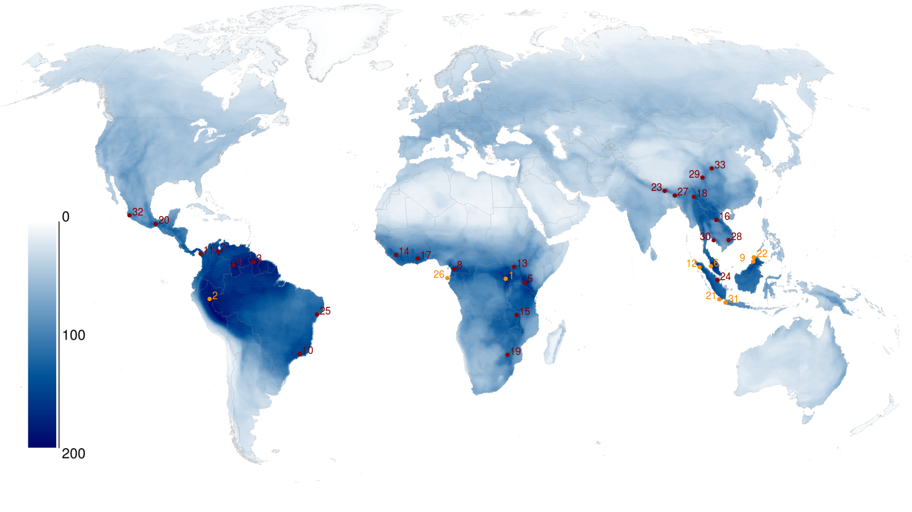
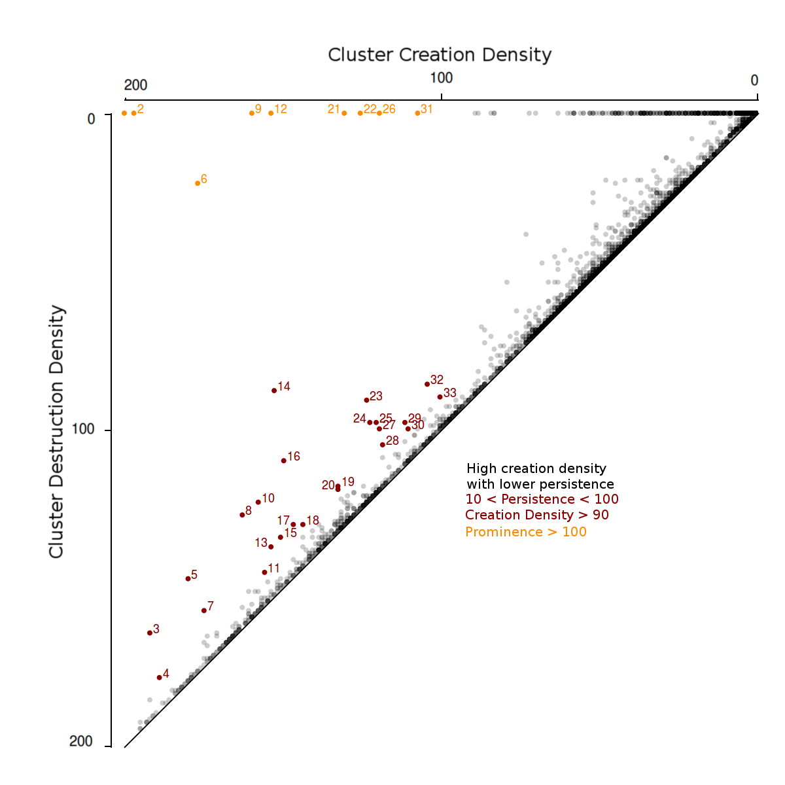
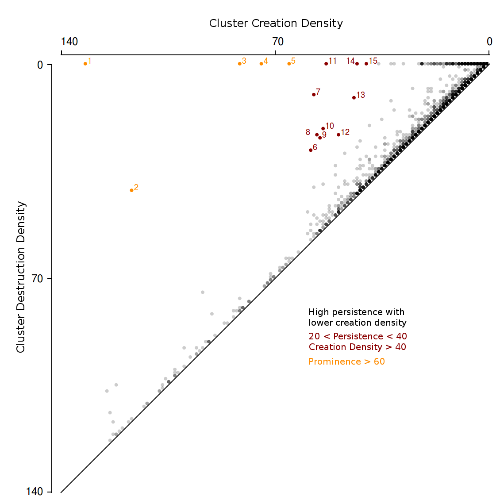
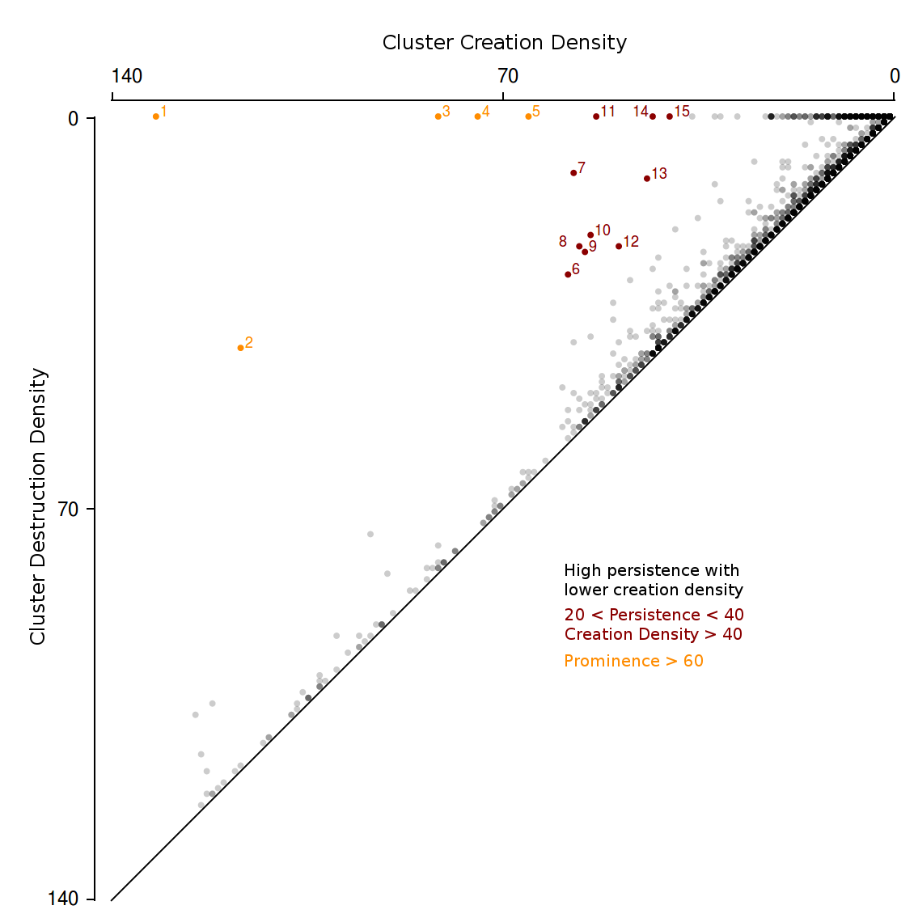

Detecting Peaks in Biodiversity
JADON WAGSTAFF - April 9, 2017
Introduction
Data was obtained from the International Union for the Conservation of Nature (IUCN) via shapefiles (IUCN, 2017). The files contained sets of polygons representing the ranges of different species assessed by the IUCN. The goal is to answer the question "Where are areas of high biodiversity?" This was accomplished by using a density based clustering algorithm.
Data
The data obtained was in the form of Esri shapefiles containing polygons each representing an expected range for a given species. These polygons were often large, diverse, complex, and overlapping. They proved to be unsuitable to analyze as they were. The method used to solve these problems was to create an ordered set of points on the globe and find which were contained in the polygon, then use this point cloud for the clustering algorithms.
To create a point cloud, about a million points were formed on a spherical representation of the earth in a grid like point cloud set with approximately 22km great-circle distance between adjacent points. For a given polygon, each point was assessed to determine whether it was contained in the polygon or not. This was accomplished by determining how many times a ray, starting at the point, intersected the polygon. Once it was determined that a point was in the polygon, the species id of that polygon was added to an array representing that point. This was done for all polygons and the result was an ordered point cloud, each an array of species found at that geographical coordinate. Each array has the property that the size of the array corresponds to the depth of polygons at that point. The fact that the point cloud is ordered was utilized to make the clustering algorithms more efficient.
Density Based Clustering
An implementation of the DBSCAN for the ordered point cloud dataset was created. For this implementation, the density of an ε radius around a point p was found by taking the average depth of p and each point within ε of p. Also, ε was limited to values greater than 22km since no points were closer together than that. The resulting clusters matched nicely with maps on biodiversitymapping.org as long as ε was smaller than about 100km. At this point, the polygons were able to be clustered for some depth threshold to provide regions where biodiversity was above that threshold. Additionally, the depth information can be used to create a heat map of biodiversity or endangerment. These are interesting, if somewhat trivial, tools to analyze the data. Now, is there a way to find and quantify the regions of high density relative to their surroundings?
In topological data analysis, persistent homology is used to detect prominent features of a space and the results are shown in a persistence diagram. The ideas found in persistent homology can be adapted to find regions of high density relative to their surroundings. Instead of building complexes by increasing the ε ball around a point, clusters are built by decreasing the minimum density value and keeping ε constant. And instead of killing complexes by merging them into older complexes, clusters are killed by merging them with denser clusters.
Results
All the clusters c produced by the algorithm have a point, (birth(c), death(c)), that can be plotted on a graph to form a prominence diagram. Clusters with a high birth value are more dense than clusters with lower birth values. Further, death(c) gives the lowest density that occurs between that point and the closest denser cluster. These can be used to find the prominence of a density cluster which is the distance between (birth(c), death(c)) and the diagonal. Below are examples of this analysis for mammals and amphibians with some of the more prominent peaks labeled.
Mammals
 Amphibians
 
References
International Union for the Conservation of Nature. (2017). Spatial Data Download. Retrieved from http://www.iucnredlist.org/technical-documents/spatial-data/